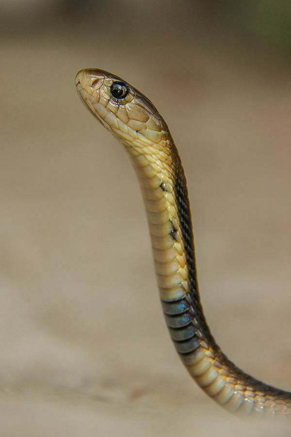

Venom HazardHow dangerous is the venom itself?79.8
Rank
8 of 78
8 of 78
Potency67.8
LD50 of 0.225 mg/kg (IP injection).
Quantity91.7
Up to 600 mg of venom in a single milking.
Monocled cobra ranks 8 of 78 for Venom Hazard and 32 of 91 for Human Risk.

LD50 of 0.225 mg/kg (IP injection).
Up to 600 mg of venom in a single milking.
Rated 7 out of 10. Common near rice fields and villages in South and Southeast Asia.
Level 3 of 5: Defensive if cornered or provoked; usually warns or retreats first.
Fast (hours). Slow onset scores higher because people often delay treatment.
Regional.
An equal average of Venom Hazard and Human Risk. Always read it with the two scores beside it.
Scores are relative to the species on this site. Bars run from 0 to 100. How these scores are built.
No clinical summary recorded yet.
| Measure | Value | Source | Grade |
|---|---|---|---|
| LD50 (mice) | 0.225 mg/kg · IP | Ernst & Zug (1996) compilation (secondary); primary study not traced | C |
| Venom yield | 150–600 mg | Ernst & Zug (1996) compilation (secondary); basis not stated; unstated — assumed range across specimens | C |
| Deaths a year | – | No sourced figure yet. |
Built on secondary compilations rather than the original lab studies. The ranking is unlikely to change much, but the exact figures could.
Flags: LD50 not tested under the skin (route: IP).
Closest in both Venom Hazard and Human Risk.